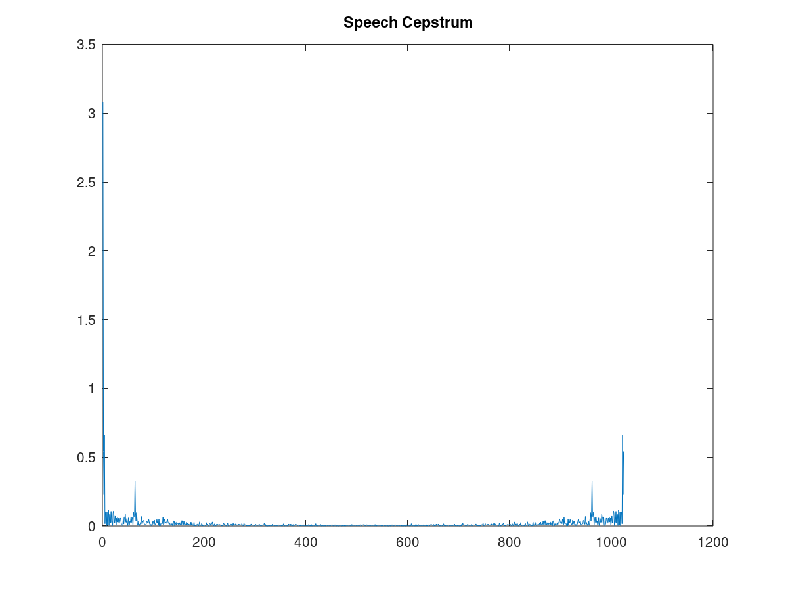
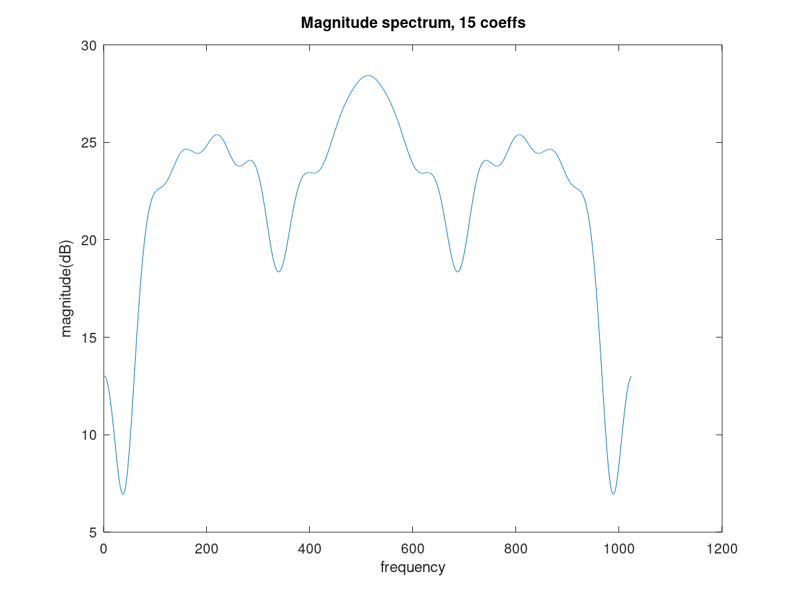
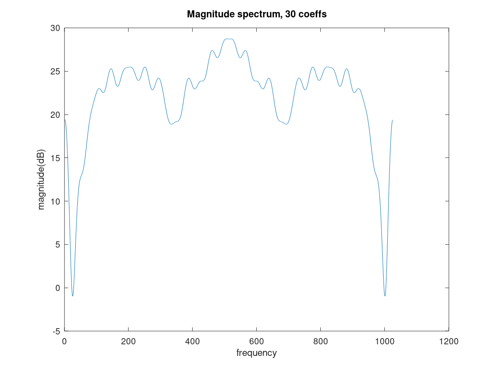
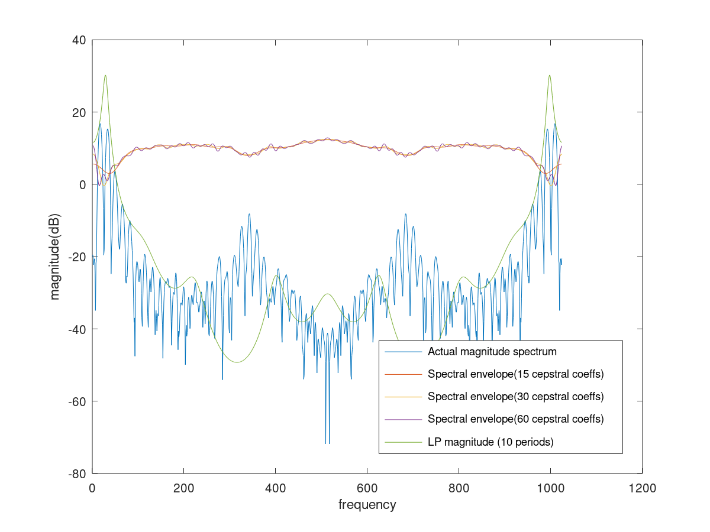

as2_Q4_2n
pkg load control;
pkg load signal;
pkg load image;
fs = 8000;
f0 = 120;
t = 0:1/fs:0.5;
a = [1.0000, -1.0871, -0.2748, 0.5702, -0.0624, -0.4328, 0.4394, 0.1627, -0.4760, 0.2163, 0.0571;];
dur = 1024;
N = 1024;
s_a = audioread('n.wav');
l_a = length(s_a);
tham = 30e-3*fs;
ham = hamming(tham);
y = s_a(100:tham+99).*ham;
y1 =y;
ffty = abs(fft(y, dur));
Cep = log(ffty);
cep = real(ifft(Cep));
figure(1)
plot(abs(cep))
title('Speech Cepstrum')
filt_c = zeros(dur,1);
dur = 15
filt_c(1:dur) = 1;
cepfilt1 = real(fft(cep.*filt_c));
figure (3)
plot(20*log(abs(cepfilt1)))
title('Magnitude spectrum, 15 coeffs')
xlabel('frequency')
ylabel('magnitude(dB)')
dur = 30
filt_c(1:dur) = 1;
cepfilt2 = real(fft(cep.*filt_c));
figure (4)
plot(20*log(abs(cepfilt2)))
title('Magnitude spectrum, 30 coeffs')
xlabel('frequency')
ylabel('magnitude(dB)')
dur = 60
filt_c(1:dur) = 1;
cepfilt3 = real(fft(cep.*filt_c));
figure (5)
plot(20*log(abs(cepfilt3)))
title('Magnitude spectrum, 60 coeffs')
xlabel('frequency')
ylabel('magnitude(dB)')
xh2=zeros(1024,1);
per = 10;
E=0.0482;
ak=a;
for i=0:1024,
ex = exp(-(0:per)*1i*(i/1024 * 2 * pi));
xh2(i+1) = E/(abs(ex*ak')).^2;
end
x = sqrt(xh2);
fft_a = mag2db(abs(fft(y1, 1024)));
figure(6)
plot((1:1:N),[fft_a, mag2db(abs(cepfilt1)), mag2db(abs(cepfilt2)), mag2db(abs(cepfilt3)), mag2db(xh2(1:1024))])
legend({'Actual magnitude spectrum','Spectral envelope(15 cepstral coeffs)', 'Spectral envelope(30 cepstral coeffs)', 'Spectral envelope(60 cepstral coeffs)', 'LP magnitude (10 periods)'}, 'Location', 'SouthEast')
xlabel('frequency')
ylabel('magnitude(dB)')
dur = 15
dur = 30
dur = 60
